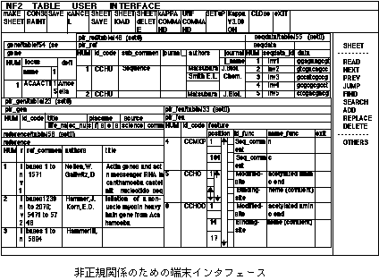

ＦＴＰ
- 非正規関係データベース管理システム：Ｋａｐｐａ−ＩＩ [5,711K]

- 非正規関係データベース管理システム：Ｋａｐｐａ−ＩＩ（データ１）
[5,332K]
- 非正規関係データベース管理システム：Ｋａｐｐａ−ＩＩ（データ２）
[4,857K]
- 非正規関係データベース管理システム：Ｋａｐｐａ−ＩＩ（データ３）
[9,995K]
www-admin@icot.or.jp
マ シ ン：PSI 環 境：SIMPOS 言 語：ESP ソース量：12 MB 文 書：なし
